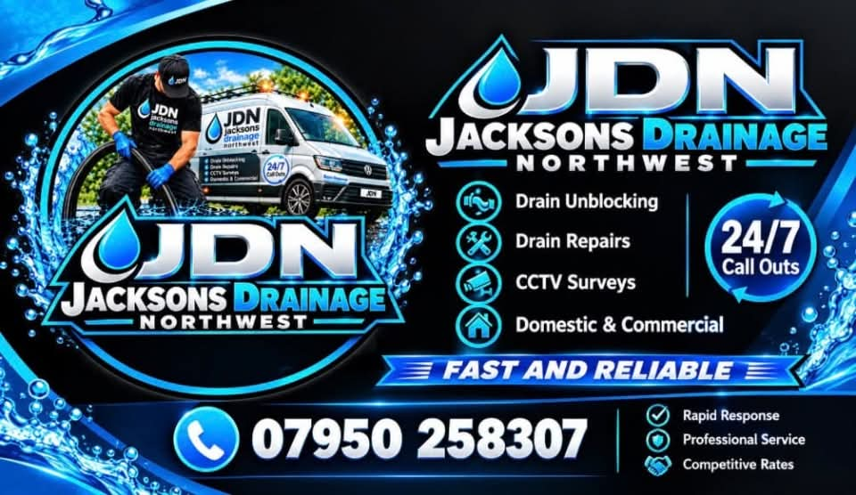
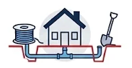
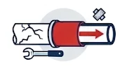
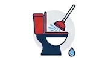
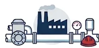

Drain unblocking in your area
Help with blocked sinks, toilets and outside drains. We’ll discuss the problem and the service available for your property.
Call to enquire →Jacksons Drainage Northwest provides drainage services in Widnes, Runcorn and Warrington. Contact us to discuss your issue and check availability.
From blocked drains to CCTV inspections and installation work, contact our team to discuss the right next step.
Help with blocked sinks, toilets and outside drains. We’ll discuss the problem and the service available for your property.
Call to enquire →Support for blocked toilets and bathroom drainage, with care to minimise disruption at home or work.
Call to enquire →Drain installation and upgrades for business properties, facilities and commercial sites.
Call to enquire →Drain installation and replacement work for homeowners, landlords and residential properties.
Call to enquire →Repair options for damaged drainage, including relining where suitable for the issue.
Call to enquire →Camera inspections can help identify blockages, damage and other problems within drain lines.
Call to enquire →Call to discuss a drainage issue in your area and our team can guide you through the next steps.
Call our team and tell us what is happening.
We’ll talk through the problem and the service you may need.
We’ll discuss availability and arrange the next step with you.
Our engineer will assess the issue and explain the way forward.
Call Jacksons Drainage Northwest any time to discuss your drainage issue.
Fast, reliable and professional drainage services for homes and businesses in Widnes, Runcorn and Warrington. From stubborn blockages to drain repairs and CCTV surveys, our team is ready to help, day or night.

Practical solutions for blocked, damaged and hard-to-diagnose drains. We work with domestic and commercial customers in Widnes, Runcorn and Warrington.
Get water flowing freely again with effective unblocking for drains inside and outside your property.
Inspect drains with camera equipment to help locate blockages and damage.

Install or replace drainage systems for homeowners and rental properties.

Repair damaged drains and find a suitable way to restore the system.

Resolve toilet and bathroom drainage blockages carefully, with minimal disruption.

Install or upgrade drainage systems for businesses, facilities and commercial sites.
Call our team and we’ll guide you through the next steps for your drainage issue.
Call any time and tell us what is happening.
We’ll ask a few questions and talk through the service you may need.
We’ll discuss availability and arrange the next step with you.
Our engineer will assess the issue and explain the way forward.
When a drain causes trouble, you want a team that listens, explains the issue and gets to work. Jacksons Drainage Northwest is ready to help residential and commercial customers.
Serving Widnes, Runcorn and Warrington.
Have we helped with a drainage problem? Get in touch and tell us about your experience.
Follow or message Jacksons Drainage Northwest on Instagram.
Get in touch if you need help with a drainage problem or want to ask about a service.
Yes. Jacksons Drainage Northwest offers 24/7 call outs. Phone us on 07950 258307 to discuss the issue and availability.
Yes. We provide drainage services for domestic and commercial customers.
Our services include drain unblocking, drain repairs, CCTV surveys and drainage support for domestic and commercial properties.
We serve Widnes, Runcorn and Warrington. Call us to discuss your location.
Call 07950 258307. We can discuss your drainage issue and the next steps.
Speak to Jacksons Drainage Northwest. We’re available 24/7 for drainage call outs in Widnes, Runcorn and Warrington.
07950 258307Fast and reliable drainage solutions for homes and businesses.